Experiment result
Critical difference

Micro-benchmark Critical difference
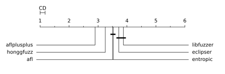
| Fuzzer | Rank |
|---|
| aflplusplus | 2.90 |
| honggfuzz | 3.25 |
| afl | 3.51 |
| entropic | 3.52 |
| eclipser | 3.72 |
| libfuzzer | 3.88 |
Overall (ranking by edges covered)
- honggfuzz (859,023 edges covered), success rate: 17.40%(348/2000 pairs)
- aflplusplus (856,143 edges covered), success rate: 18.00%(360/2000 pairs)
- eclipser (831,835 edges covered), success rate: 15.90%(318/2000 pairs)
- afl (831,374 edges covered), success rate: 15.85%(317/2000 pairs)
- entropic (815,841 edges covered), success rate: 15.85%(317/2000 pairs)
- libfuzzer (782,017 edges covered), success rate: 15.55%(311/2000 pairs)
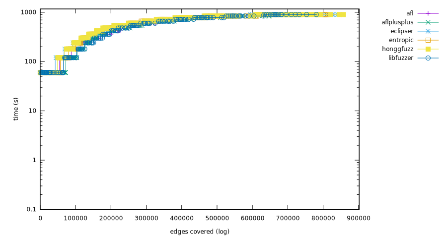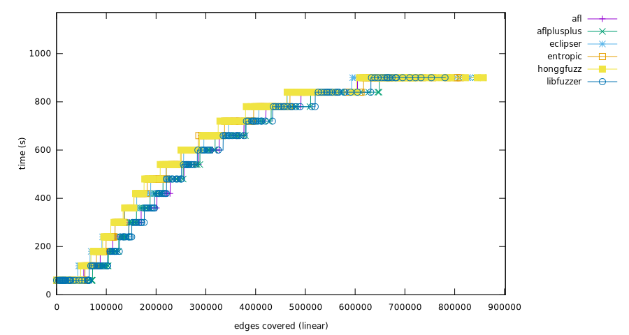
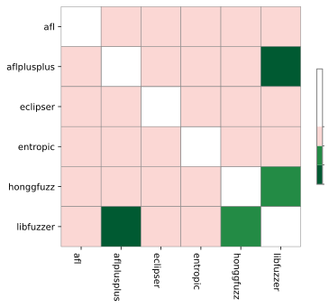
bloaty_fuzz_target
Ranking
- afl, (30,148 edges covered), success rate: 0.00%(0/100 pairs)
- eclipser, (28,320 edges covered), success rate: 0.00%(0/100 pairs)
- entropic, (26,997 edges covered), success rate: 1.00%(1/100 pairs)
- honggfuzz, (26,450 edges covered), success rate: 2.00%(2/100 pairs)
- aflplusplus, (20,365 edges covered), success rate: 0.00%(0/100 pairs)
- libfuzzer, (19,070 edges covered), success rate: 0.00%(0/100 pairs)


Mann-Whitney U test
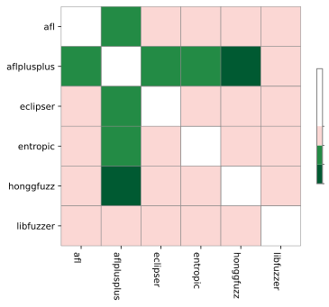
curl_curl_fuzzer_http
Ranking
- aflplusplus, (75,514 edges covered), success rate: 8.00%(8/100 pairs)
- afl, (72,120 edges covered), success rate: 5.00%(5/100 pairs)
- eclipser, (69,932 edges covered), success rate: 3.00%(3/100 pairs)
- honggfuzz, (68,998 edges covered), success rate: 5.00%(5/100 pairs)
- entropic, (67,866 edges covered), success rate: 6.00%(6/100 pairs)
- libfuzzer, (65,505 edges covered), success rate: 4.00%(4/100 pairs)
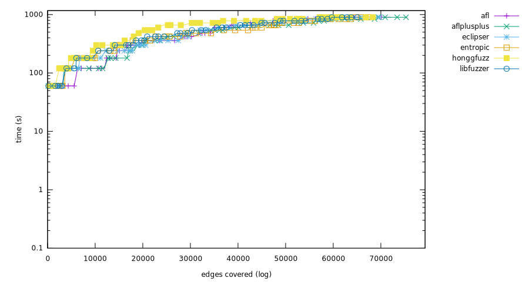 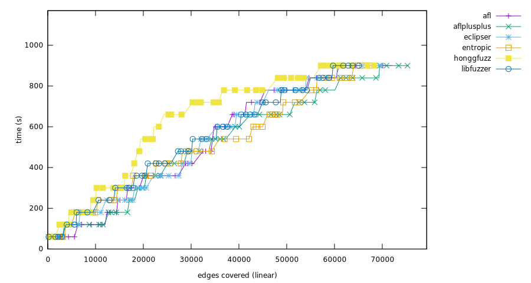
Mann-Whitney U test
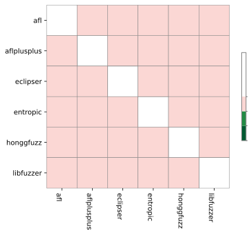
freetype2-2017
Ranking
- honggfuzz, (64,026 edges covered), success rate: 1.00%(1/100 pairs)
- aflplusplus, (59,213 edges covered), success rate: 0.00%(0/100 pairs)
- eclipser, (53,962 edges covered), success rate: 1.00%(1/100 pairs)
- afl, (47,037 edges covered), success rate: 0.00%(0/100 pairs)
- entropic, (42,100 edges covered), success rate: 0.00%(0/100 pairs)
- libfuzzer, (41,066 edges covered), success rate: 0.00%(0/100 pairs)
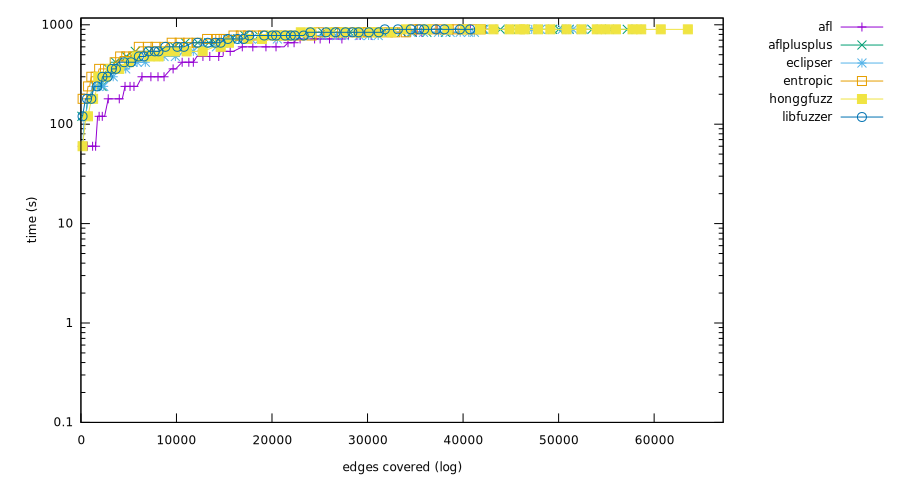 
Mann-Whitney U test
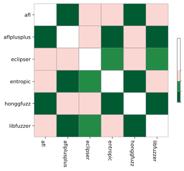
harfbuzz-1.3.2
Ranking
- aflplusplus, (59,370 edges covered), success rate: 0.00%(0/100 pairs)
- honggfuzz, (56,853 edges covered), success rate: 0.00%(0/100 pairs)
- eclipser, (52,820 edges covered), success rate: 1.00%(1/100 pairs)
- afl, (52,260 edges covered), success rate: 2.00%(2/100 pairs)
- entropic, (47,246 edges covered), success rate: 0.00%(0/100 pairs)
- libfuzzer, (46,208 edges covered), success rate: 0.00%(0/100 pairs)
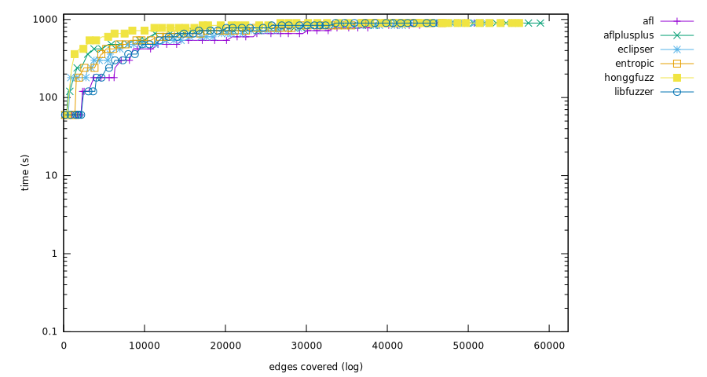 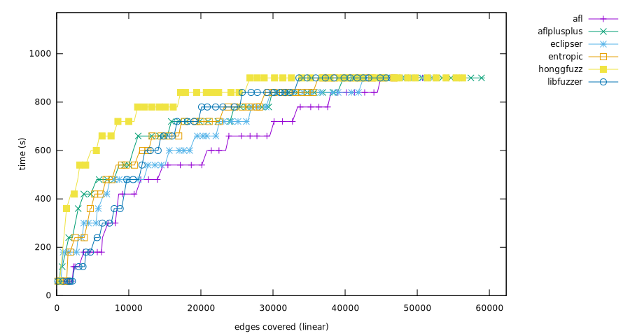
Mann-Whitney U test
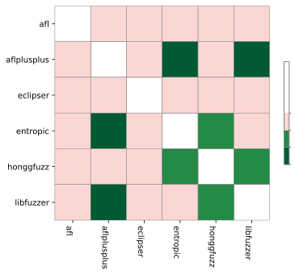
jsoncpp_jsoncpp_fuzzer
Ranking
- honggfuzz, (9,319 edges covered), success rate: 100.00%(100/100 pairs)
- afl, (9,319 edges covered), success rate: 100.00%(100/100 pairs)
- entropic, (9,319 edges covered), success rate: 100.00%(100/100 pairs)
- eclipser, (9,317 edges covered), success rate: 98.00%(98/100 pairs)
- libfuzzer, (9,300 edges covered), success rate: 95.00%(95/100 pairs)
- aflplusplus, (9,255 edges covered), success rate: 85.00%(85/100 pairs)
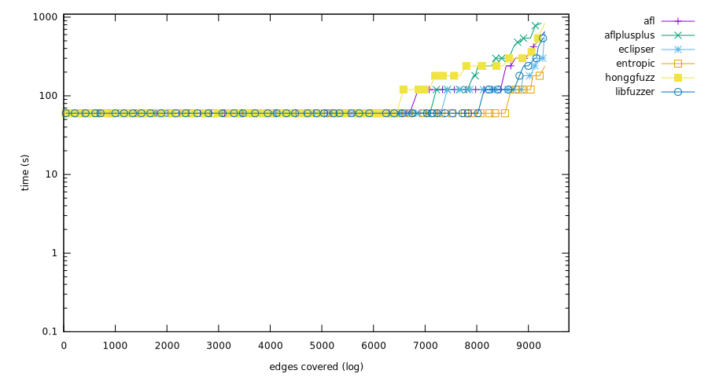 
Mann-Whitney U test
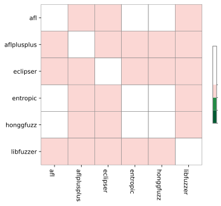
lcms-2017-03-21
Ranking
- honggfuzz, (19,408 edges covered), success rate: 5.00%(5/100 pairs)
- aflplusplus, (17,166 edges covered), success rate: 2.00%(2/100 pairs)
- eclipser, (16,507 edges covered), success rate: 3.00%(3/100 pairs)
- afl, (16,153 edges covered), success rate: 4.00%(4/100 pairs)
- entropic, (14,013 edges covered), success rate: 2.00%(2/100 pairs)
- libfuzzer, (12,966 edges covered), success rate: 2.00%(2/100 pairs)
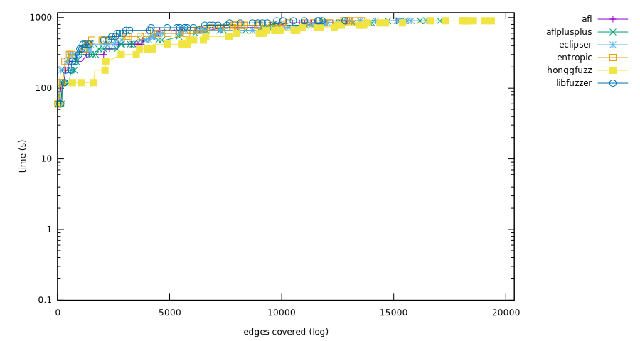 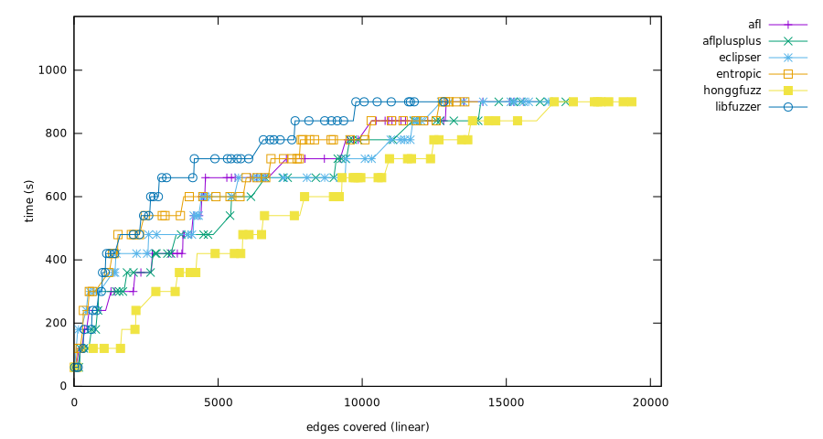
Mann-Whitney U test
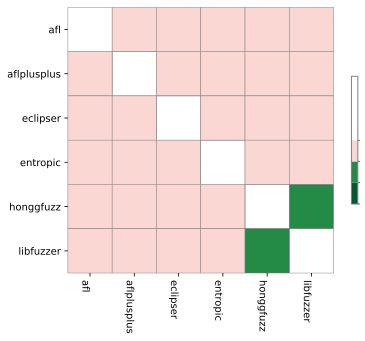
libjpeg-turbo-07-2017
Ranking
- aflplusplus, (22,397 edges covered), success rate: 21.00%(21/100 pairs)
- afl, (19,507 edges covered), success rate: 11.00%(11/100 pairs)
- eclipser, (19,129 edges covered), success rate: 11.00%(11/100 pairs)
- entropic, (16,265 edges covered), success rate: 4.00%(4/100 pairs)
- honggfuzz, (14,736 edges covered), success rate: 5.00%(5/100 pairs)
- libfuzzer, (13,225 edges covered), success rate: 4.00%(4/100 pairs)
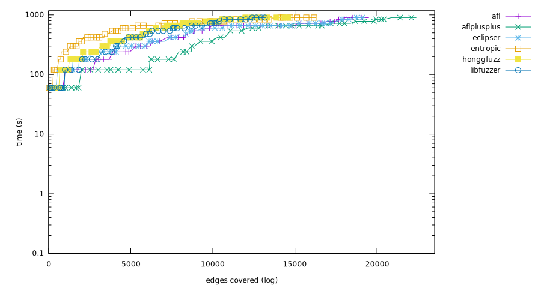 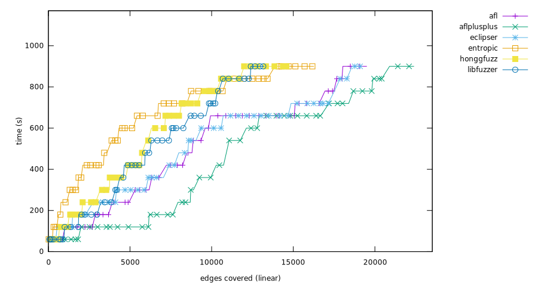
Mann-Whitney U test
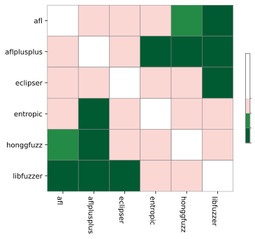
libpcap_fuzz_both
Ranking
- aflplusplus, (37,635 edges covered), success rate: 12.00%(12/100 pairs)
- honggfuzz, (34,473 edges covered), success rate: 7.00%(7/100 pairs)
- entropic, (33,355 edges covered), success rate: 6.00%(6/100 pairs)
- eclipser, (33,094 edges covered), success rate: 9.00%(9/100 pairs)
- libfuzzer, (31,735 edges covered), success rate: 8.00%(8/100 pairs)
- afl, (31,099 edges covered), success rate: 8.00%(8/100 pairs)
 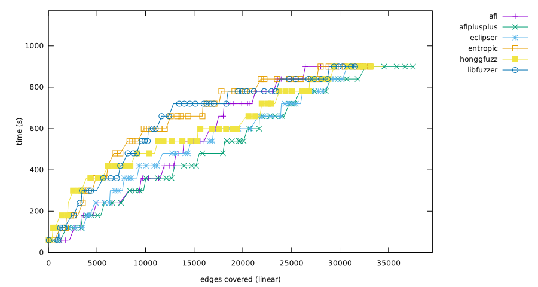
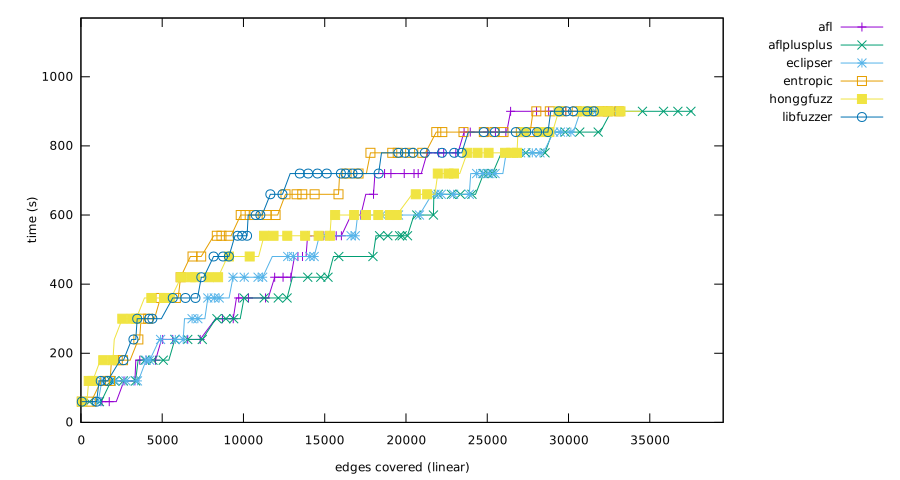
Mann-Whitney U test
libpng-1.2.56
Ranking
- aflplusplus, (12,424 edges covered), success rate: 63.00%(63/100 pairs)
- honggfuzz, (11,417 edges covered), success rate: 51.00%(51/100 pairs)
- entropic, (11,349 edges covered), success rate: 42.00%(42/100 pairs)
- libfuzzer, (10,423 edges covered), success rate: 27.00%(27/100 pairs)
- eclipser, (10,383 edges covered), success rate: 44.00%(44/100 pairs)
- afl, (9,857 edges covered), success rate: 41.00%(41/100 pairs)
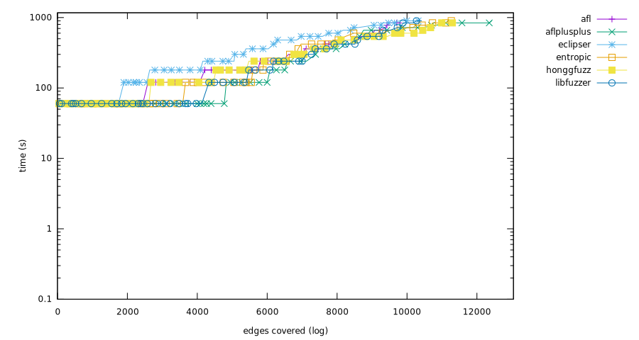 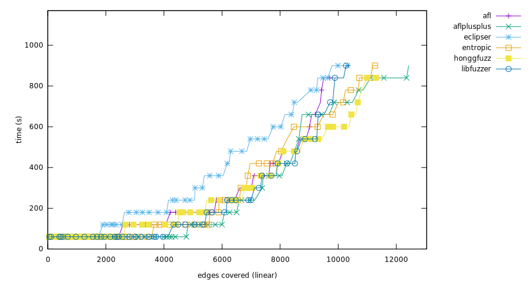
Mann-Whitney U test
libxml2-v2.9.2
Ranking
- honggfuzz, (80,352 edges covered), success rate: 28.00%(28/100 pairs)
- eclipser, (76,820 edges covered), success rate: 11.00%(11/100 pairs)
- afl, (76,759 edges covered), success rate: 15.00%(15/100 pairs)
- aflplusplus, (76,004 edges covered), success rate: 14.00%(14/100 pairs)
- entropic, (72,563 edges covered), success rate: 11.00%(11/100 pairs)
- libfuzzer, (69,576 edges covered), success rate: 12.00%(12/100 pairs)
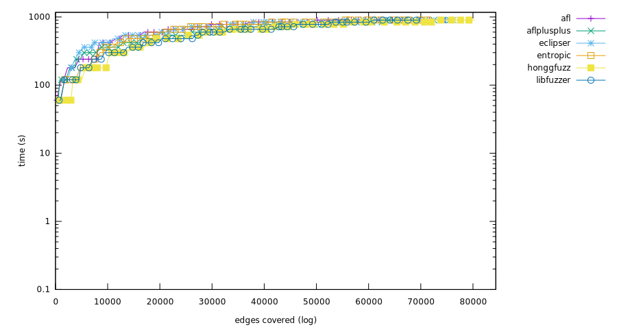 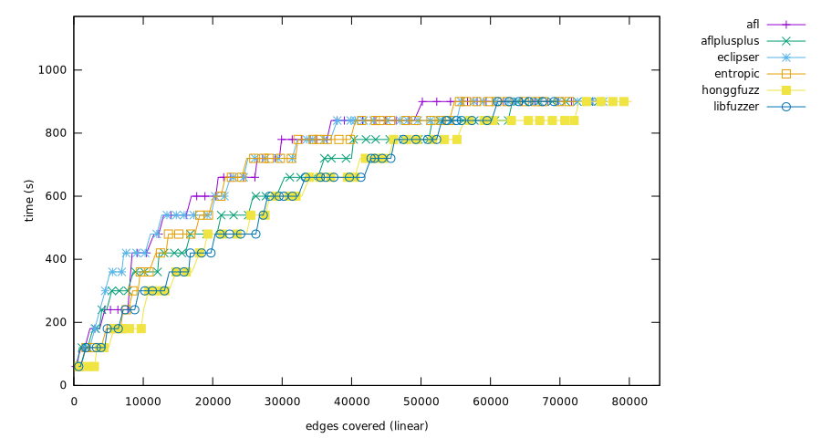
Mann-Whitney U test
libxslt_xpath
Ranking
- aflplusplus, (52,478 edges covered), success rate: 5.00%(5/100 pairs)
- afl, (48,342 edges covered), success rate: 4.00%(4/100 pairs)
- eclipser, (48,184 edges covered), success rate: 3.00%(3/100 pairs)
- libfuzzer, (48,031 edges covered), success rate: 3.00%(3/100 pairs)
- entropic, (47,787 edges covered), success rate: 2.00%(2/100 pairs)
- honggfuzz, (47,763 edges covered), success rate: 2.00%(2/100 pairs)
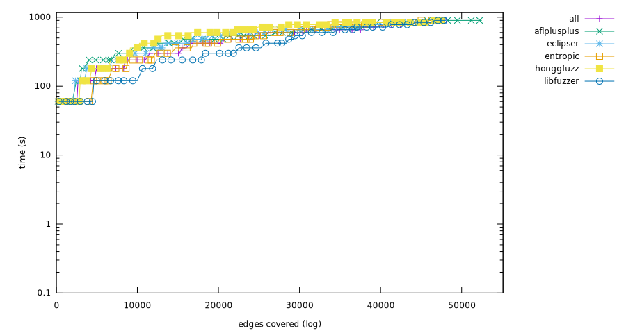 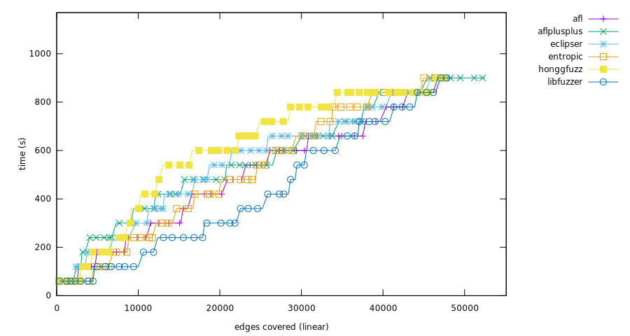
Mann-Whitney U test
mbedtls_fuzz_dtlsclient
Ranking
- aflplusplus, (8,023 edges covered), success rate: 8.00%(8/100 pairs)
- honggfuzz, (7,160 edges covered), success rate: 7.00%(7/100 pairs)
- afl, (6,584 edges covered), success rate: 7.00%(7/100 pairs)
- entropic, (6,564 edges covered), success rate: 7.00%(7/100 pairs)
- eclipser, (6,230 edges covered), success rate: 8.00%(8/100 pairs)
- libfuzzer, (4,863 edges covered), success rate: 3.00%(3/100 pairs)
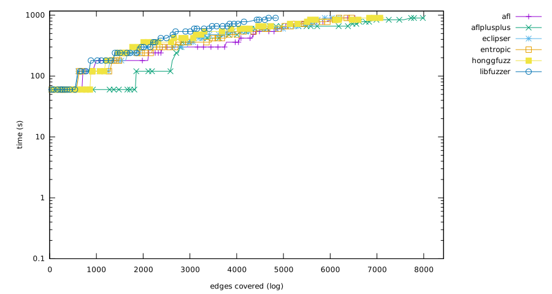 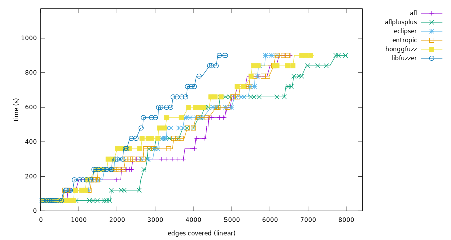
Mann-Whitney U test
openssl_x509
Ranking
- entropic, (21,899 edges covered), success rate: 0.00%(0/100 pairs)
- libfuzzer, (21,093 edges covered), success rate: 0.00%(0/100 pairs)
- aflplusplus, (19,807 edges covered), success rate: 0.00%(0/100 pairs)
- afl, (19,083 edges covered), success rate: 0.00%(0/100 pairs)
- eclipser, (17,551 edges covered), success rate: 0.00%(0/100 pairs)
- honggfuzz, (16,688 edges covered), success rate: 0.00%(0/100 pairs)
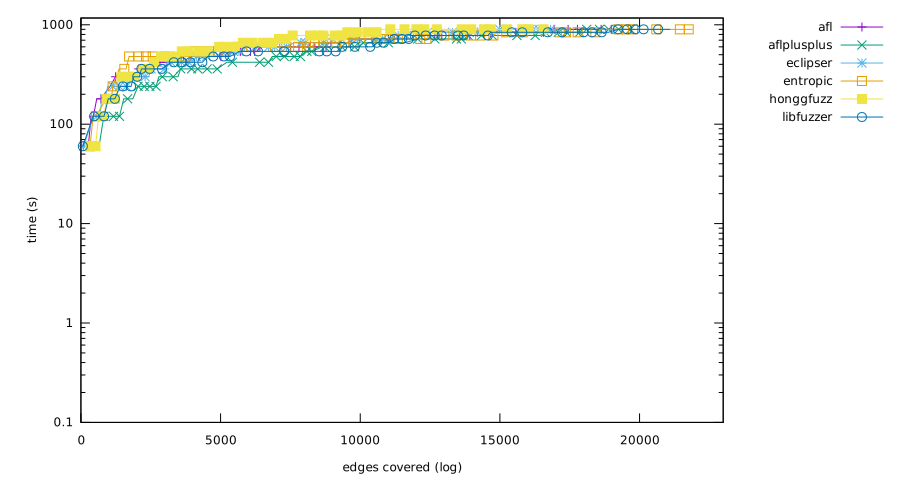 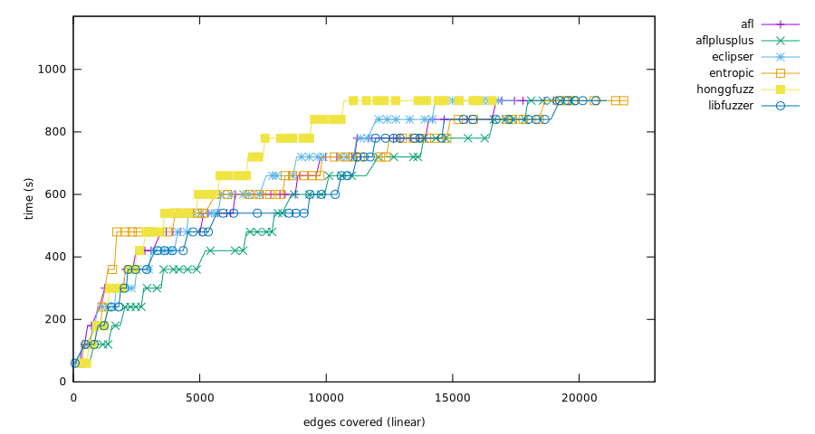
Mann-Whitney U test
openthread-2019-12-23
Ranking
- libfuzzer, (18,033 edges covered), success rate: 26.00%(26/100 pairs)
- entropic, (17,980 edges covered), success rate: 24.00%(24/100 pairs)
- aflplusplus, (17,662 edges covered), success rate: 19.00%(19/100 pairs)
- afl, (16,745 edges covered), success rate: 12.00%(12/100 pairs)
- eclipser, (16,686 edges covered), success rate: 15.00%(15/100 pairs)
- honggfuzz, (16,269 edges covered), success rate: 10.00%(10/100 pairs)
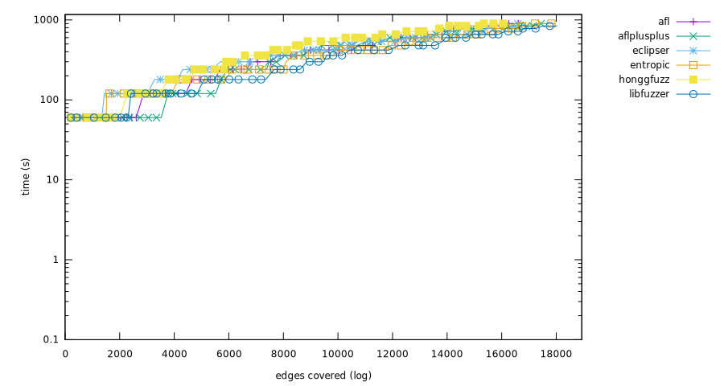 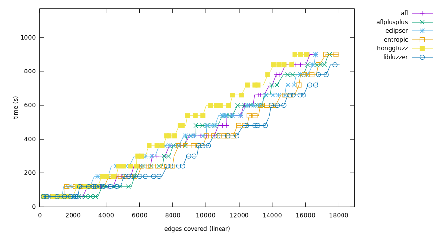
Mann-Whitney U test
php_php-fuzz-parser
Ranking
- honggfuzz, (111,600 edges covered), success rate: 1.00%(1/100 pairs)
- entropic, (111,116 edges covered), success rate: 1.00%(1/100 pairs)
- aflplusplus, (106,637 edges covered), success rate: 1.00%(1/100 pairs)
- afl, (106,412 edges covered), success rate: 0.00%(0/100 pairs)
- libfuzzer, (105,005 edges covered), success rate: 0.00%(0/100 pairs)
- eclipser, (104,175 edges covered), success rate: 1.00%(1/100 pairs)
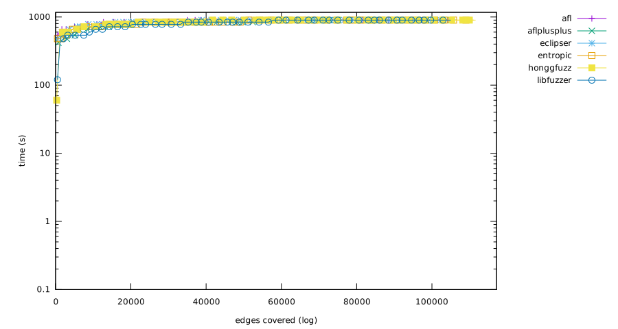 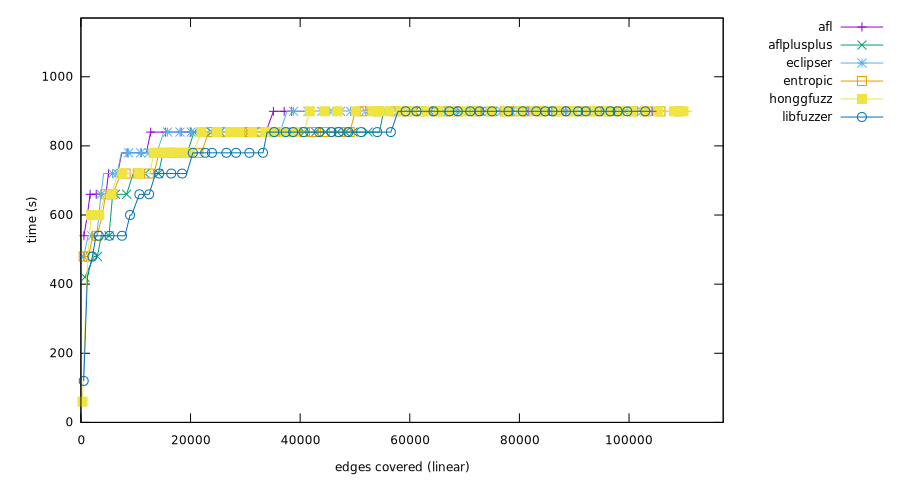
Mann-Whitney U test
proj4-2017-08-14
Ranking
- entropic, (17,227 edges covered), success rate: 29.00%(29/100 pairs)
- libfuzzer, (17,215 edges covered), success rate: 25.00%(25/100 pairs)
- honggfuzz, (17,111 edges covered), success rate: 23.00%(23/100 pairs)
- aflplusplus, (15,977 edges covered), success rate: 11.00%(11/100 pairs)
- eclipser, (15,347 edges covered), success rate: 7.00%(7/100 pairs)
- afl, (15,283 edges covered), success rate: 6.00%(6/100 pairs)
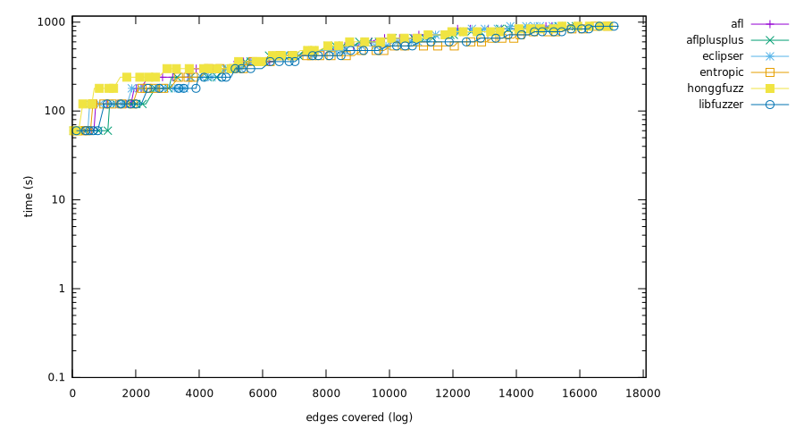 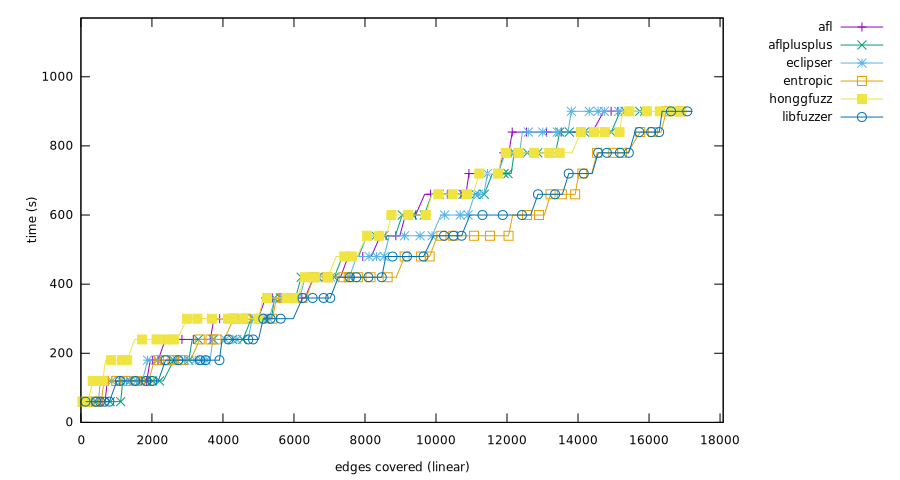
Mann-Whitney U test
re2-2014-12-09
Ranking
- libfuzzer, (52,737 edges covered), success rate: 88.00%(88/100 pairs)
- eclipser, (52,728 edges covered), success rate: 83.00%(83/100 pairs)
- afl, (52,727 edges covered), success rate: 79.00%(79/100 pairs)
- aflplusplus, (52,726 edges covered), success rate: 82.00%(82/100 pairs)
- honggfuzz, (52,668 edges covered), success rate: 75.00%(75/100 pairs)
- entropic, (52,503 edges covered), success rate: 65.00%(65/100 pairs)
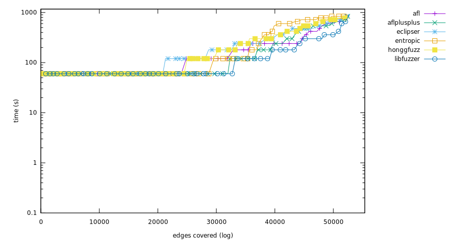 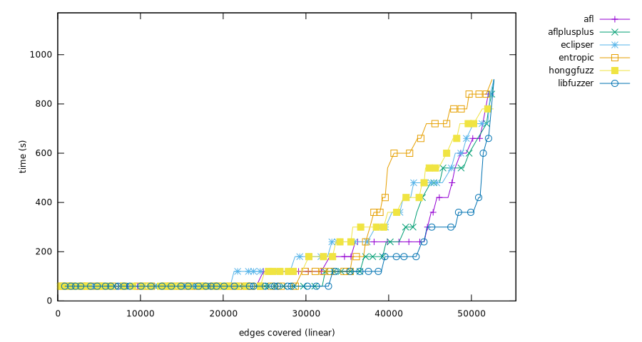
Mann-Whitney U test
sqlite3_ossfuzz
Ranking
- afl, (191,788 edges covered), success rate: 4.00%(4/100 pairs)
- honggfuzz, (190,561 edges covered), success rate: 5.00%(5/100 pairs)
- eclipser, (190,287 edges covered), success rate: 3.00%(3/100 pairs)
- entropic, (188,019 edges covered), success rate: 4.00%(4/100 pairs)
- libfuzzer, (186,903 edges covered), success rate: 1.00%(1/100 pairs)
- aflplusplus, (180,409 edges covered), success rate: 4.00%(4/100 pairs)
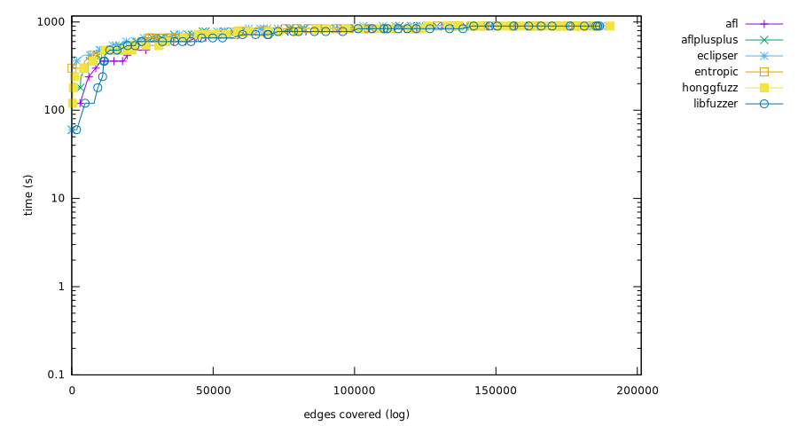 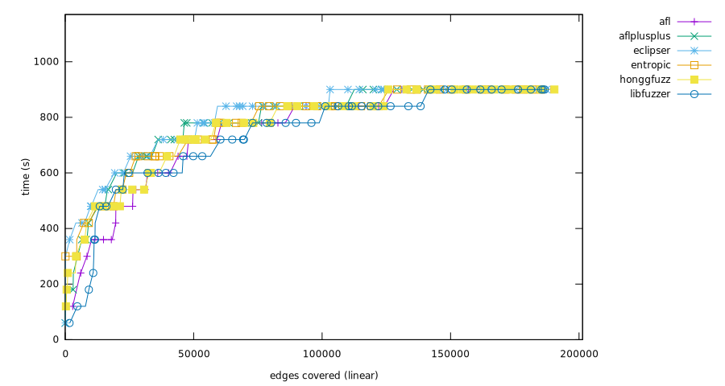
Mann-Whitney U test
systemd_fuzz-link-parser
Ranking
- honggfuzz, (2,439 edges covered), success rate: 6.00%(6/100 pairs)
- entropic, (2,347 edges covered), success rate: 8.00%(8/100 pairs)
- libfuzzer, (2,245 edges covered), success rate: 6.00%(6/100 pairs)
- eclipser, (2,216 edges covered), success rate: 6.00%(6/100 pairs)
- afl, (2,142 edges covered), success rate: 10.00%(10/100 pairs)
- aflplusplus, (2,072 edges covered), success rate: 6.00%(6/100 pairs)
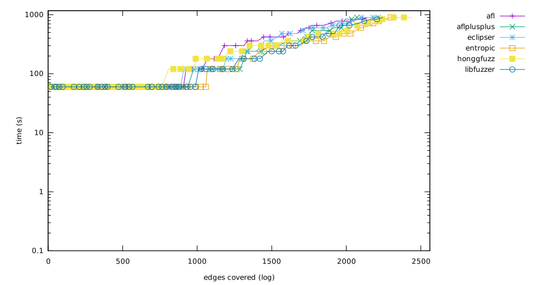 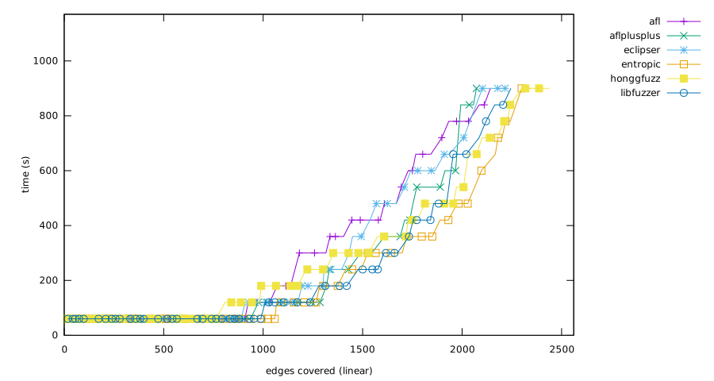
Mann-Whitney U test
vorbis-2017-12-11
Ranking
- aflplusplus, (11,009 edges covered), success rate: 19.00%(19/100 pairs)
- honggfuzz, (10,732 edges covered), success rate: 15.00%(15/100 pairs)
- entropic, (9,326 edges covered), success rate: 5.00%(5/100 pairs)
- eclipser, (8,147 edges covered), success rate: 11.00%(11/100 pairs)
- afl, (8,009 edges covered), success rate: 9.00%(9/100 pairs)
- libfuzzer, (6,818 edges covered), success rate: 7.00%(7/100 pairs)
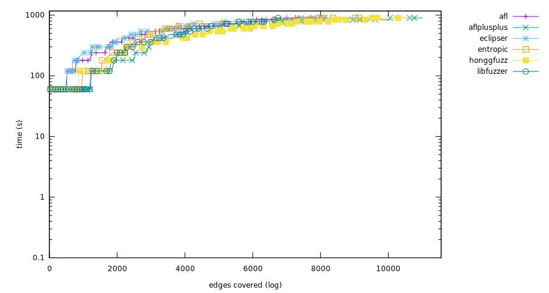 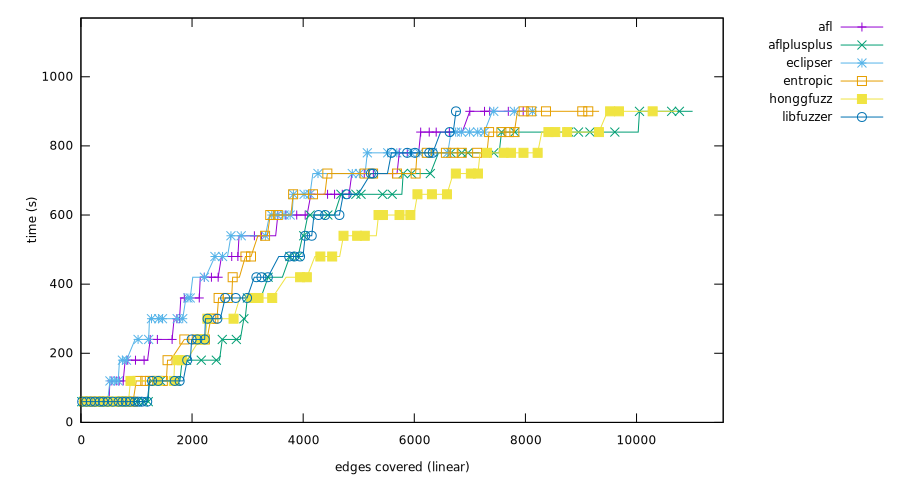
Mann-Whitney U test